Step 1
Xlence 사이트 접속 후 정보 입력하기
Xlence 사이트에 접속해서 정보를 입력해주세요.
성함은 영문으로 작성하며, 신분증과 동일하게 입력하셔야 KYC 심사가 통과합니다.
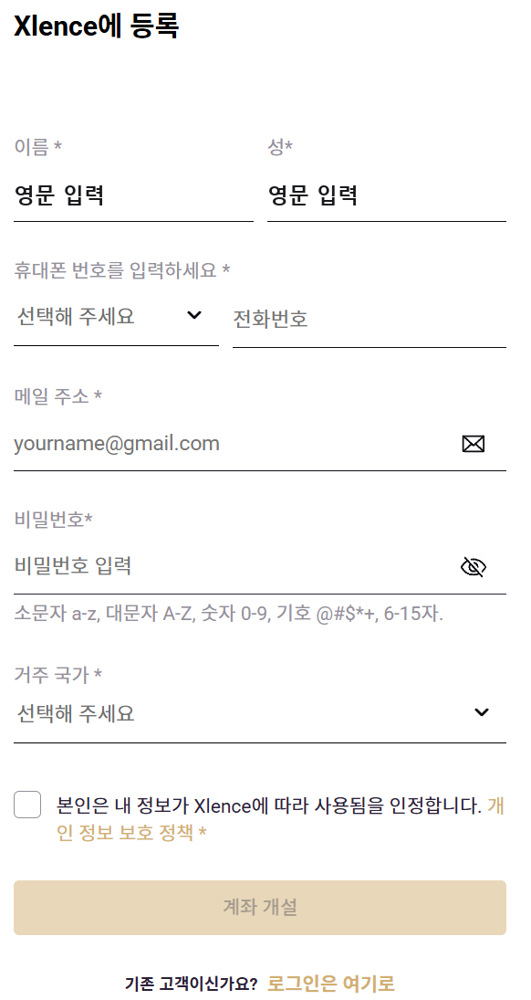
Guidebook
Guide 01
01
Xlence 회원가입 후 계좌 설정과 인증, 프로필 정보 작성을 진행합니다.
Xlence 사이트에 접속해서 정보를 입력해주세요.

개인정보 및 계좌 설정을 위해 사진과 같이 입력해주세요.
휴대폰 및 이메일 인증을 위해 「프로필」 → 「계좌」로 이동하여 인증을 완료해주세요.
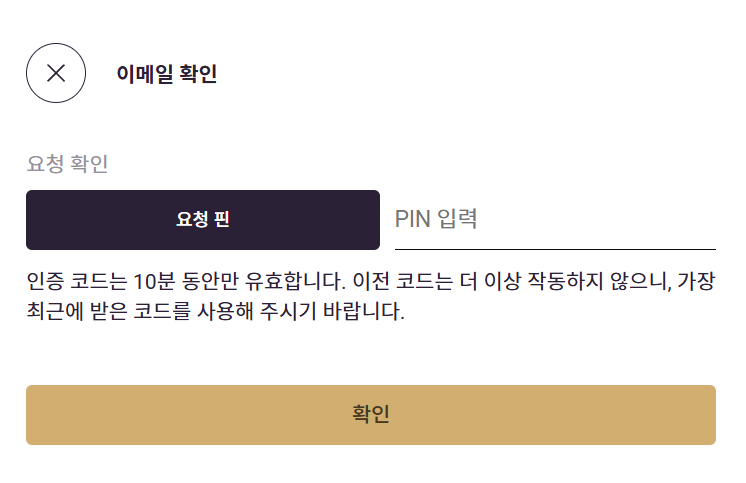
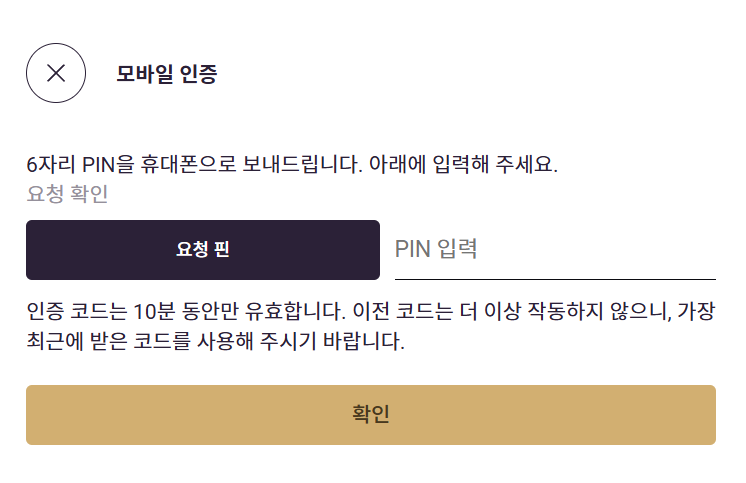
주소와 재무프로필 및 재무경험에 대한 작성을 위해 「프로필」 → 「프로필 정보」로 이동해주세요.
Guide 02
01
MetaTrader4 설치 파일을 다운로드하고, 필요 시 여러 개의 MT4를 실행할 수 있도록 설정합니다.
다운받은 파일을 실행 후 설정을 눌러 설치폴더 및 프로그램 그룹 이름 뒤에 -1, -2 등을 입력한 다음 다음을 누르면 복수실행이 가능합니다.
Guide 03
입출금 공지사항
입금
Xlence 로그인 후 메인화면에서 「거래계좌」 → 「입금」 → 「입금 방법 선택」을 진행해주세요.
「입금하기」 → 「디지털 자산」 → 「전송」 시 QR 코드 또는 주소로 15분 이내 입금해주세요.
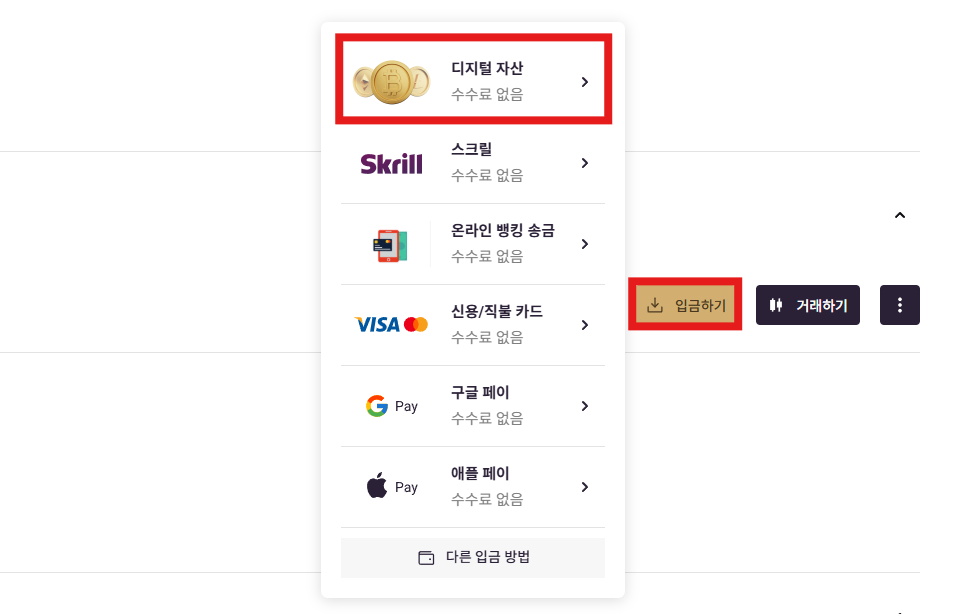
「입금하기」→ 「온라인 뱅킹 송금」→ 「전송」 이후 「전송지침」→ 「이용동의」→ 「제공동의」→ 「계좌인증」→ 「입금신청」 후 30분 이내 입금해주세요.
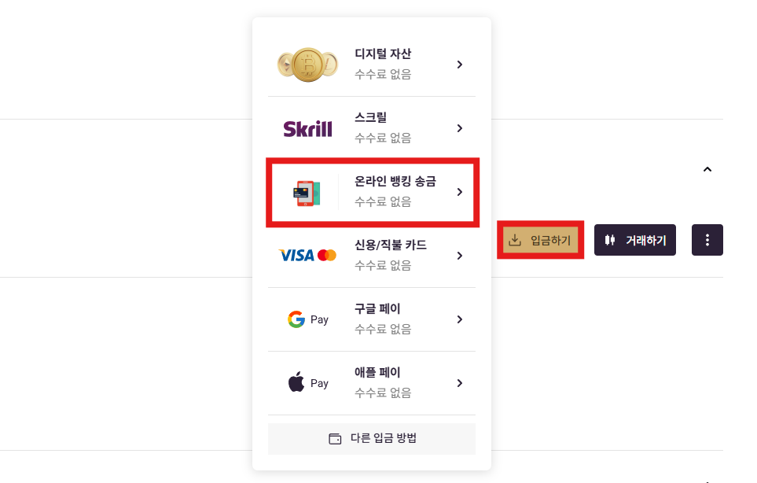
출금
Xlence 로그인 후 메인화면에서 「재무」→ 「내부이체」→ 「거래 계좌에서 KRW 혹은 USDT 지갑으로 이체」→ 「전송」 을 진행해주세요.
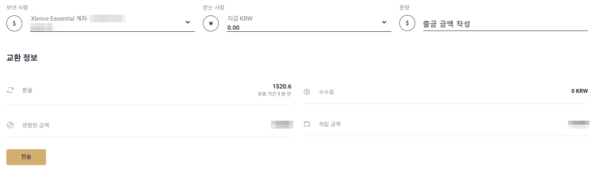
내부이체가 완료되었다면 「재무」→ 「인출」→ 「출금할 KRW 혹은 USDT 계좌를 선택」→ 「금액 입력 후 출금 요청 제출」 을 진행해주세요.
지불금을 확인 후 대금 수령 방법을 선택하여 아래 「물러서다」를 눌러주세요.
Guide 04
04
MT4 계좌 로그인 후 시스템 트레이딩 주소와 파일을 설정합니다.
「Xlence-Real6 서버 선택」→ 「현재 거래 계좌 선택 및 입력」
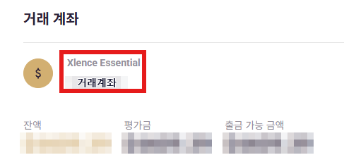
「도구」→ 「옵션」→ 「시스템 트레이딩」→ 「시스템 트레이딩 허용」→ 「표시된 URL 목록에 대한 WebRequest 허용에 세팅 주소 추가」
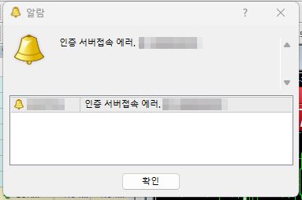
「파일」→ 「데이타 폴더 열기」→ 「MQL4 및 Experts 폴더 이동」→ 「폴더 내에 파일 이동」→ 「탐색기 마우스 우클릭 이후 새로고침」
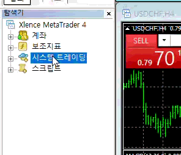
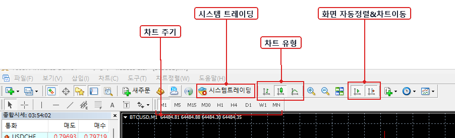
Guide 05
05
볼린저 밴드는 가격 변동성을 보는 기술적 지표예요. 차트에 보통 3개의 선으로 표시됩니다. 쉽게 말하면, 가격이 평소 움직이는 범위를 띠처럼 보여주는 도구예요.
가격 변동이 커지면 밴드가 넓어지고, 변동이 작아지면 밴드가 좁아집니다. 보통 가격이 위쪽 밴드에 가까우면 과열 가능성, 아래쪽 밴드에 가까우면 약세 또는 반등 가능성을 참고합니다.
「시스템 트레이딩」→ 「차트에 추가」→ 「일반 - 실거래 가능」→ 「삽입 - 세팅값 수정」→ 「확인」
「탐색기」→ 「'Bands' 폴더를 차트에 끌어 옮기기」→ 「색상 및 넓이 기호에 맞게 변경」
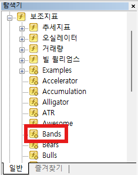